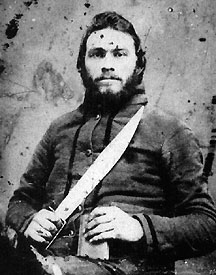

|

NAME: John Franklin Cooley
BORN: 1832
DIED: 1924
ALLEGIANCE: Confederate
HIGHEST RANK: 2nd Sergeant
UNIT: 1st Tennessee Cavalry Regiment, Company B; 13th Tennessee
Cavalry Battalion; 5th Tennessee Cavalry Regiment, Company C
RECORD: Enlisted November 1, 1861;
assigned to Company B, 1st Tennessee Cavalry Regiment
January 1862. Sent home sick June 1862; returned August 1862
and remained with his unit until sent home sick November
1862. Returned March 1863 and participated in skirmishes at
Richmond and Paris, Kentucky, July 1863, and Ringgold,
Georgia, September 1863. Wounded in fighting at Franklin,
Tennessee, July 1864. Promoted to 2nd Sergeant; paroled May
1865.
|
|
It has been said, "You can't keep a good man down." If
anyone embodied that adage, it was John Franklin Cooley. In
spite of illness and injury, he made it through the entire
Civil War and went on to live to a ripe old age and to
father a whole passel of children.
Born in 1832 in Meigs County, Tennessee, Cooley answered the
Confederate call to arms that followed the firing on Fort
Sumter in April 1861. Cooley enlisted in November and in
January was assigned to Company B of the 1st Tennessee
Cavalry Regiment. Cooley participated in some minor battles,
but was sent home sick in June 1862. While he was home
recovering, his regiment was reduced and redesignated as the
13th Cavalry Battalion. Sometime before the end of August,
Cooley returned to his unit and put in a quiet stretch of
service until November, when he was sent home sick again.
During his convalescence, the battalion was bolstered by the
addition of Company F from Thomas's North Carolina Legion,
and became the 5th Tennessee Cavalry Regiment.
Cooley was back in camp sometime prior to March 1863, and
fought in skirmishes at Richmond and Paris, Kentucky, in
July 1863, and at Ringgold, Georgia, on September 11. Cooley
was with his regiment at the Battle of Chickamauga, Georgia,
on September 19-20, 1863, and participated in skirmishes in
the days that followed. October 1863 saw Cooley and the 5th
Tennessee fighting Federals at Shelbyville and Philadelphia,
Tennessee. In late July 1864, Cooley was wounded by a shell
during fighting at Franklin, Tennessee. He was later
promoted to 2nd Sergeant, and that was the rank he held when
his unit was surrendered as part of General Joseph E.
Johnston's army on April 26, 1865.
Paroled in May 1865, Cooley returned to Tennessee and worked
at the McKinzie Blacksmith Shop. His state pension record of
1902 shows that, at the age of 70, he had been married five
times (his wife at that time was 30 years old) and had
fathered 24 children. On May 29, 1924, Cooley died at the
age of 92 and was buried in a homemade coffin in White
County, Tennessee.
Source: Civil War Times Illustrated
41:2 (May 2002), 88.
|